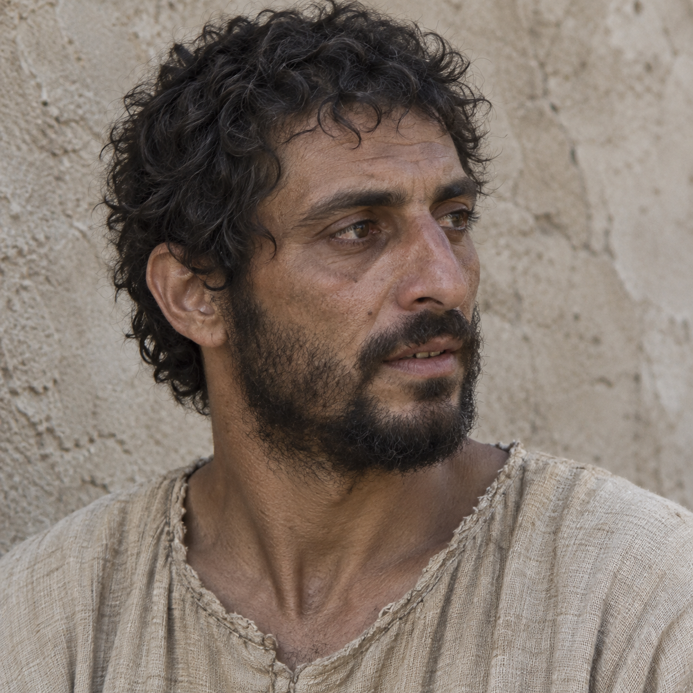

BLOCKED · HUMAN REVIEW REQUIRED
Jesus of Nazareth
Class: interpretive named-figure portrait
Period/region: first-century Roman Galilee
Caption: Interpretive orientation image only—not a facial reconstruction. Jesus's exact appearance is unknown; the Shroud of Turin was not used as facial evidence.
Alternative text
Interpretive portrait of an ordinary, weathered West Asian Jewish man in a rough undyed tunic, representing Jesus without claiming an exact likeness.
Red-team notes
- Deliberately rejects European, glamorous, heroic, haloed, and Shroud-derived conventions.
- A plausible regional appearance is not proof of an individual face.
Generation prompt
Square 1:1 sober archaeological-museum interpretive portrait representing Jesus only as an ordinary first-century Jewish man from Roman Galilee; explicitly not a facial reconstruction, icon, Shroud-derived face, or idealized sacred image. Three-quarter side view rather than a direct heroic gaze. Clearly West Asian and non-white, sun-darkened medium-brown olive complexion, dark eyes, compact irregular face, noticeably asymmetrical broad nose, slightly uneven teeth barely visible behind relaxed lips, tired under-eyes, sun damage and small skin marks, short coarse tightly wavy dark hair cut unevenly, patchy practical beard. Lean working-person neck and shoulders in a plain rough undyed tunic. Expression attentive but unposed. Flat diffuse daylight and neutral rough plaster wall. Deliberately ordinary and historically plausible, not beautiful, handsome, sculpted, regal, serene, glowing, muscular, youthful-model-like, cinematic, European, long-haired, haloed, crowned, robed in white, or accompanied by text.
SHA-256: c44a07760d828d96c9a017e73e917845893a23cf0e669297a3661dfda7ddfc03